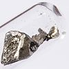

lanthanum

Definition: Lanthanum is a chemical element with the symbol La and atomic number 57. It is a soft, ductile, silvery-white metal that tarnishes slowly when exposed to air. It is the eponym of the lanthanide series, a group of 15 similar elements between lanthanum and lutetium in the periodic table, of which lanthanum is the first and the prototype. Lanthanum is traditionally counted among the rare earth elements. Like most other rare earth elements, the usual oxidation state is +3, although some compounds are known with oxidation state +2. Lanthanum has no biological role in humans but is essential to some bacteria. It is not particularly toxic to humans but does show some antimicrobial activity.
Source: Wikipedia
Wikipedia Page
Wikidata Page